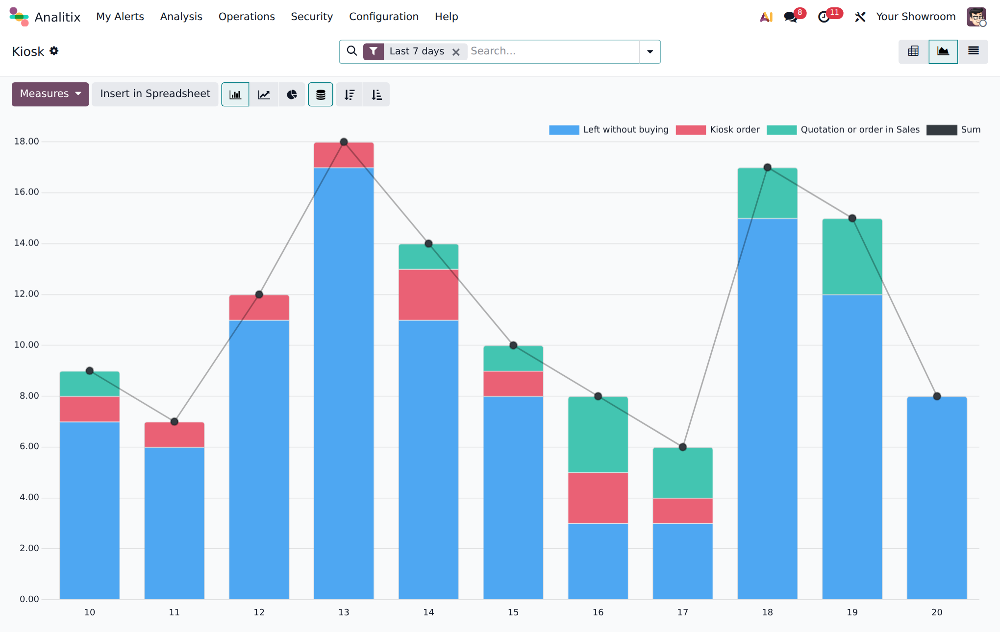
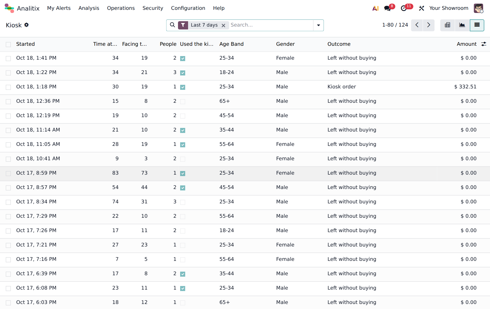
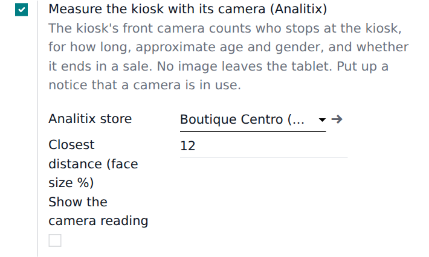

Every time someone stops in front of the kiosk, Analitix receives a visit with:
People passing by far from the kiosk are not counted, and stops shorter than 3 seconds are dropped.



Odoo 19 · Analitix (XUBAX) · Point of Sale with Self-Order Kiosk · Sales · a kiosk tablet with a front camera and a recent Chrome.
Face detection runs locally with face-api.js (vladmandic, MIT license), included.
Questions? Write to soporte@xubax.com — XUBAX.